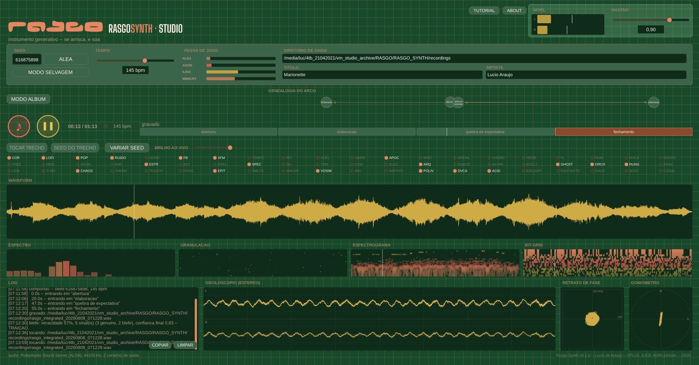

A seed is a starting point
Explore tempo, scales, rhythm, sound material and narrative form. A seed is not the complete recipe: settings, modes and saved state also matter.
Independent musical instrument · C++ / JUCE
Take risks, then sound.
Rasgo Synth Studio builds compositions from a seed, musical decisions and interacting sound processes. It is part of RASGO: a family of original instruments by Lucio de Araujo, made for experimentation, composition and learning.
Experimental version 0.2.1 · Linux, Windows and macOS
HÉNON · a=1.4 · b=0.3 · Hénon map illustration — not application audio

01 · RASGO SYNTH STUDIO
Explore tempo, scales, rhythm, sound material and narrative form. A seed is not the complete recipe: settings, modes and saved state also matter.
Percussion, low-register voices, melodic material and textures can enter, withdraw and interact. Module selection changes the available palette; availability is not a promise of equal audibility.
Generate a single piece or use album mode to explore a collection. Listen, compare trajectories and keep the files and companion information for your research.
An album lets you work with a group of pieces. You can look for continuity or place different tempos, lengths and materials alongside one another. Listening order matters too: a short track can leave space for a longer one, and a dense passage feels different after silence.
In Studio, the theme guides the collection while each track follows its own course. Choose the track count, optionally vary initial BPM and plan the total duration and its distribution. Module selection determines which sources may take part across the album. Start with two tracks and listen for what connects or separates them.
Learn to compose an album →02 · SEED → WAV
The manual and whole-instrument guide are maintained in four languages. The historical technical catalog remains in Portuguese; it is a research reference, not a count of audible modules.
Separate packages are prepared for Linux x86_64, Windows x64 and Intel/Apple Silicon macOS. Choose your format and architecture in the installation guide. Screen reference: 1366 × 768, with scrolling in smaller windows. MIDI, a dedicated GPU and internet are not required to compose.
Provisional reference: 8 GiB RAM, with 4 GiB available; 16 GiB recommended for albums. This is not a certified minimum. Allow 500 MiB for application/workspace, plus about 1.1 GB per hour of audio.
Linux requires glibc 2.35+ and GLIBCXX_3.4.30. Startup and close passed on Debian 12, Ubuntu 24.04, Fedora and Arch with a virtual display. Windows and the same universal Mac DMG passed automated render, Unicode paths and close tests. This does not replace manual installation or physical listening. AppImage was tested extracted, not mounted through FUSE.
Choose, open and install the right package for your system →
Studio 0.2.1 is available as an experimental release, with packages, sources and checksums. One Universal 2 DMG supports Intel and Apple Silicon Macs without Rosetta. Source code is public.
Some voices can be quiet in the mix while certain percussion sounds stand out. Timbres can also recur across pieces. Listen at a comfortable volume and compare module choices. Noise, silence and rupture are among the instrument's musical possibilities.
RASGO brings together original code, artistic research, composition and learning. The credits record references and influences. Original project code uses AGPL-3.0-or-later; JUCE and the other components retain their own licenses.